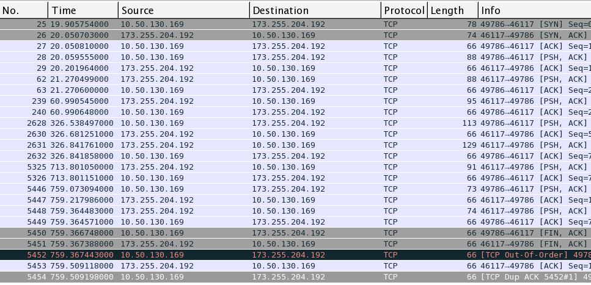

We used Wireshark to sniff all the TCP packets, which was send and received on our client. There is no connection between our Client and our server when we start the Client so we can expect to see a Three Way Handshake among the first three packets, when we attempt to connect. First we connected to the server using the CONNECT# command in our client. It was easy to see the packet send and the expected (Online#) packet received. When another user logged in, our Client again received the packet containing the ONLINE# command along with the list of online users. We also tested the SEND# command, by sending a message both from and to our Client and received the expected answer from our Server. Upon closing our Chat Client the CLOSE# command was send to our Server, which send back a CLOSE# command after which a graceful shutdown was done. The last packets received contains the expected FIN ACK packets.
The image above shows the above mentioned test. The text left of the image describes the content of the packets. The image below shows the content as sniffed by wireshark.
The image above depicts the flow diagram. It is easy to spot the three way handshake, psh, ack and corresponding acks and the final FIN ACK teardown.